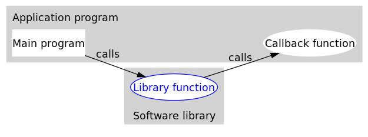

1. ¿Qué es una función callback?
Las funciones callback, solo por el nombre, suenan más sofisticadas que las funciones normales. Entonces, ¿qué es exactamente una función callback? Perdón por mis escasas lecturas, no he visto una definición de función callback en ningún libro. Busqué en Baidu y encontré muchas opiniones diversas; una gran parte usa un escenario similar a este para explicarlo: A va a la tienda de B a comprar algo, justo falta stock, A deja su número a B, y cuando haya mercancía se lo notifica a A. Esto hace que uno piense más en operaciones asíncronas que en callbacks. Además, hay dos frases en inglés que me impresionaron: 1) If you call me, I will call you back; 2) Don't call me, I will call you. Parece tener mucho sentido, pero si lo piensas bien, ¿no pueden las funciones normales lograr también estas dos cosas? Por eso, creo que estas explicaciones no son muy adecuadas, porque no expresan las características de las funciones callback, es decir, no se ve en qué se diferencian de las funciones normales. Sin embargo, la explicación de Baidu Baike me parece bastante buena (aunque siempre critico la búsqueda de Baidu...): una función callback es una función que se invoca a través de un puntero a función. Si pasas el puntero (dirección) de una función como parámetro a otra función, y cuando ese puntero se usa para invocar la función a la que apunta, decimos que es una función callback.
A continuación, primero daré mi opinión. Podemos descomponer el término literalmente. Para "función callback" (回调Función), en chino se puede entender de dos maneras: 1) la función que es llamada de vuelta; 2) la función que ejecuta la acción de llamar de vuelta. Entonces, ¿qué demonios es eso de llamar de vuelta?
Primero veamos el análisis de callback (Callback) de Wikipedia: In computer programming, a callback is any executable code that is passed as an argument to other code, which is expected to call back (execute) the argument at a given time. This execution may be immediate as in a synchronous callback, or it might happen at a later time as in an asynchronous callback. Es decir, pasar un fragmento de código ejecutable a otro código como si fuera un parámetro, y ese fragmento será invocado y ejecutado en algún momento; a esto se le llama callback. Si el código se ejecuta inmediatamente, se llama callback síncrono; si se ejecuta más tarde, se llama callback asíncrono. No discutiremos aquí sobre síncrono y asíncrono; por favor consulta la información relevante.
Veamos otra vez la expresión concisa y clara de un experto de Stack Overflow:A "callback" is any function that is called by another function which takes the first function as a parameter. Es decir, cuando la función F1 llama a la función F2, la función F1 pasa a la función F2, a través de un parámetro, un puntero a otra función F3. Durante la ejecución de la función F2, la función F2 llama a la función F3. Esta acción se llama callback, y la función F3 que primero se pasó como puntero y luego es llamada de vuelta es la función callback. ¿A estas alturas deberías entender la definición de función callback, verdad?
2. ¿Por qué usar funciones callback?
Muchos amigos podrían pensar: ¿por qué no escribir directamente el nombre de la función en el lugar de la llamada, como en la invocación de funciones normales? ¿No sería igual de válido? ¿Por qué tenemos que usar funciones callback? Tener esta idea es muy bueno, porque muchos ejemplos de funciones callback que se ven en Internet en realidad pueden implementarse completamente con llamadas a funciones normales. Para responder a esta pregunta, primero entendamos los beneficios y el propósito de las funciones callback: el desacoplamiento. Sí, una respuesta tan simple. Precisamente por esta característica, las funciones normales no pueden reemplazar a las funciones callback. Por lo tanto, a mis ojos, esta es la mayor característica de las funciones callback. Veamos una imagen de Wikipedia que creo que está muy bien dibujada.

A continuación, se presenta el significado de la imagen anterior con un fragmento de código incompleto en C:
Ejemplo
#include<softwareLib.h> // Incluye el archivo de cabecera de la biblioteca de software donde se encuentra Library Function
int Callback() // Callback Function
{
// TODO
return 0;
}
int main() // Main program
{
// TODO
Library(Callback);
// TODO
return 0;
}
A simple vista, el callback parece solo una llamada entre funciones, sin diferencia con una llamada a función normal. Pero si se observa con atención, se puede encontrar una diferencia clave entre ambos: en el callback, el programa principal pasa la función callback a la función de biblioteca como un parámetro. De esta manera, con solo cambiar el parámetro que pasamos a la función de biblioteca, podemos implementar diferentes funcionalidades. ¿No te parece muy flexible? Y no es necesario modificar en absoluto la implementación de la función de biblioteca; esto es desacoplamiento. Si miras más de cerca, la función principal y la función callback están en el mismo nivel, mientras que la función de biblioteca está en otro nivel. Piensa: si la función de biblioteca no es visible para nosotros y no podemos modificar su implementación, es decir, no podemos modificar la función de biblioteca para que esta llame a una función normal como se haría, entonces solo podemos pasar diferentes funciones callback. Esta es también la situación común en el trabajo diario. Ahora, si reemplazamos las funciones main(), Library() y Callback() en los lugares de las funciones F1, F2 y F3 anteriores, ¿no queda más claro?
Ahora que entiendes las características de las funciones callback, ¿puedes tener una idea aproximada de en qué situaciones deberían usarse? Así es, puedes usar funciones callback en muchos lugares para reemplazar llamadas a funciones normales, pero en mi opinión, si necesitas reducir el acoplamiento, es más recomendable usar funciones callback.
3. ¿Cómo usar funciones callback?
Ya que sabes qué es una función callback y conoces sus características, ¿cómo deberías usarla? A continuación, veamos un fragmento de código simple y ejecutable de un callback síncrono.
Ejemplo
int Callback_1() // Callback Function 1
{
printf("Hello, this is Callback_1 ");
return 0;
}
int Callback_2() // Callback Function 2
{
printf("Hello, this is Callback_2 ");
return 0;
}
int Callback_3() // Callback Function 3
{
printf("Hello, this is Callback_3 ");
return 0;
}
int Handle(int (*Callback)())
{
printf("Entering Handle Function. ");
Callback();
printf("Leaving Handle Function. ");
}
int main()
{
printf("Entering Main Function. ");
Handle(Callback_1);
Handle(Callback_2);
Handle(Callback_3);
printf("Leaving Main Function. ");
return 0;
}
Resultado de la ejecución:
Entering Main Function. Entering Handle Function. Hello, this is Callback_1 Leaving Handle Function. Entering Handle Function. Hello, this is Callback_2 Leaving Handle Function. Entering Handle Function. Hello, this is Callback_3 Leaving Handle Function. Leaving Main Function.
Se puede ver que el parámetro en la función Handle() es un puntero. Cuando se llama a la función Handle() en la función main(), se le pasan los nombres de las funciones Callback_1()/Callback_2()/Callback_3(); en este momento, el nombre de la función es el puntero a la función correspondiente. Es decir, la función callback no es más que un uso de los punteros a función. Ahora vuelve a leer esta frase: A "callback" is any function that is called by another function which takes the first function as a parameter, ¿no te queda más claro?
4. ¿Cómo usar funciones callback con parámetros?
Los más observadores habrán notado que en los ejemplos anteriores las funciones callback no tienen parámetros. Entonces, ¿podemos invocar funciones que sí tengan parámetros? La respuesta es afirmativa. ¿Y cómo se hace? Solo tenemos que modificar ligeramente el ejemplo anterior:
Ejemplo
int Callback_1(int x) // Callback Function 1
{
printf("Hello, this is Callback_1: x = %d ", x);
return 0;
}
int Callback_2(int x) // Callback Function 2
{
printf("Hello, this is Callback_2: x = %d ", x);
return 0;
}
int Callback_3(int x) // Callback Function 3
{
printf("Hello, this is Callback_3: x = %d ", x);
return 0;
}
int Handle(int y, int (*Callback)(int))
{
printf("Entering Handle Function. ");
Callback(y);
printf("Leaving Handle Function. ");
}
int main()
{
int a = 2;
int b = 4;
int c = 6;
printf("Entering Main Function. ");
Handle(a, Callback_1);
Handle(b, Callback_2);
Handle(c, Callback_3);
printf("Leaving Main Function. ");
return 0;
}
Resultado de la ejecución:
Entering Main Function. Entering Handle Function. Hello, this is Callback_1: x = 2 Leaving Handle Function. Entering Handle Function. Hello, this is Callback_2: x = 4 Leaving Handle Function. Entering Handle Function. Hello, this is Callback_3: x = 6 Leaving Handle Function. Leaving Main Function.
Se puede ver que no basta con cambiar directamente int Handle(int (*Callback)()) a int Handle(int (*Callback)(int)), sino que se debe agregar un parámetro adicional para guardar el valor del parámetro de la función callback, como el parámetro y en int Handle(int y, int (*Callback)(int)). De manera similar, se pueden usar funciones callback con múltiples parámetros.
Dirección original: https://www.cnblogs.com/jiangzhaowei/p/9129105.html